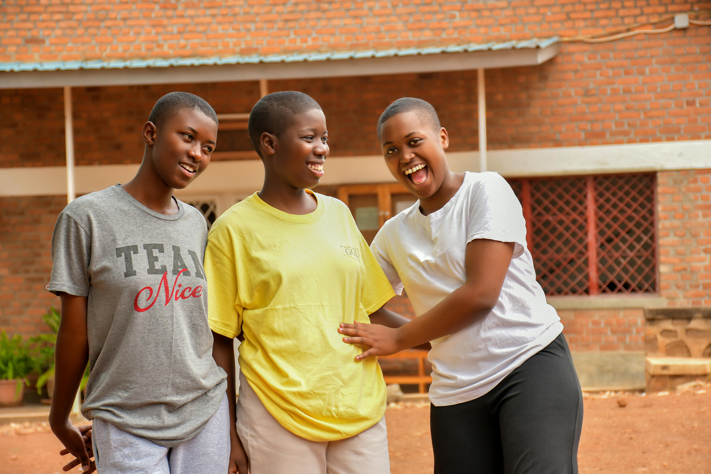

A comprehensive mentorship program Providing personalised guidance and support to African women
Program Overview
The Inspire Her Afrika Mentorship Program is a comprehensive
initiative designed to empower early-career African women with the
mentorship, training, and community they need to thrive
professionally and personally.
Our program begins with a 1-month digital bootcamp, providing
intensive training to develop critical career skills, leadership
capabilities, and personal branding. Following this, participants
engage in 3 months of one-on-one mentoring, where they are paired
with experienced professionals who guide them through setting and
achieving their goals.
Throughout the program, mentees benefit from interactive
workshops, access to valuable resources, and opportunities to
collaborate with a diverse network of peers and mentors across
Africa. Key milestones include regular check-ins, mentoring logs, and
a capstone project that reflects their progress and growth.
By the end of the program, participants not only gain a certificate of
completion but also the confidence, skills, and network to navigate
their careers successfully and make a lasting impact in their fields.
Program features
Throughout the program, mentees benefit from interactive workshops, access to valuable resources, and opportunities to collaborate with a diverse network of peers and mentors across Africa. Key milestones include regular check-ins, mentoring logs, and a capstone project that reflects their progress and growth. By the end of the program, participants not only gain a certificate of completion but also the confidence, skills, and network to navigate their careers successfully and make a lasting impact in their fields. In more details the program features:

Our program employs a carefully curated curriculum, addressing critical areas such as goal-setting, personal branding, careeer development, & project execution. This ensures a comprehensive & impactful learning experience.

Mentees are not passive learners but active participants in their growth. Each month, mentors & mentees will recieve briefs outlining their focus for the month and providing resources to guide the end of tasks tailored to enhance skills, confidence and more.

The inclusion of informational interviews, mentor consultations and virtual mastery sessions facilited by subject experts provides mentees with networking oppturnities that extend beyond their immediate mentorship circle.
The program places a strong emphasis on self-reflection. Through weekly meetings, the accompained log submissions and surveys, mentees (and the program team) are able to track progress, receive feedback, and refine their strategies.

Beyond individual growth, the program encourages mentees to actively participate in community-oriented projects, fostering a sense of social responsibility and leadership.